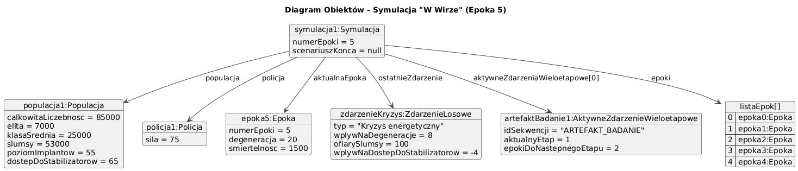

Symulacja "W Wirze": Upadek Społeczeństwa Cyber. Projekt jest symulatorem społeczeństwa w cyberpunkowym świecie, modelującym jego ewolucję przez kolejne epoki pod wpływem różnych parametrów, zdarzeń losowych i wewnętrznych dynamik społecznych, prowadzących do różnych scenariuszy końcowych.
Wiktoria BalaWiktoria BalaFilip BanasiakZadaniem symulacji jest modelowanie dynamiki społeczeństwa w dystopijnym, cyberpunkowym świecie. Użytkownik na początku definiuje parametry startowe, takie jak całkowita liczebność populacji, procentowy podział na klasy społeczne (Elita, Klasa Średnia, Slumsy), początkowy poziom technologicznego zaawansowania (poziom implantów), dostęp do środków łagodzących negatywne skutki życia (dostęp do stabilizatorów) oraz siłę organów porządkowych (siła policji). Określa również liczbę epok, przez które symulacja ma przebiegać.
W każdej epoce symulacja oblicza zmiany w społeczeństwie. Występują zdarzenia losowe (np. pandemie, kryzysy energetyczne, odkrycia technologiczne, bunty, programy socjalne) oraz zdarzenia wieloetapowe (np. badanie artefaktu), które mają określony wpływ na parametry takie jak poziom degeneracji społeczeństwa, śmiertelność w poszczególnych klasach, siłę policji, poziom implantów i dostęp do stabilizatorów. Dodatkowo, wewnętrzne mechanizmy, takie jak korupcja w przerośniętej elicie, również wpływają na populację.
Symulacja śledzi ogólny poziom degeneracji społeczeństwa, który rośnie z czasem i pod wpływem negatywnych zdarzeń, ale może być częściowo redukowany przez siłę policji. Stan populacji, w tym jej liczebność i podział na klasy, jest dynamicznie aktualizowany.
Symulacja może zakończyć się na kilka sposobów:
Wyniki każdej epoki są logowane, a po zakończeniu symulacji generowany jest raport końcowy oraz wykresy przedstawiające zmiany kluczowych parametrów (całkowita populacja, poziom degeneracji, siła policji) w czasie. Interfejs graficzny użytkownika (GUI) pozwala na wprowadzanie parametrów, uruchamianie symulacji, obserwowanie jej postępów w czasie rzeczywistym oraz przeglądanie wyników.
Przykład diagramu obiektów przedstawiający stan systemu w trakcie symulacji (np. w 5. epoce):
SymulacjaPełna dokumentacja API została wygenerowana z komentarzy Javadoc w kodzie. Można ją pobrać poniżej:
Pobierz dokumentację Javadoc (plik .zip)
Poniższa tabela zawiera sugestie, jakie wartości początkowe mogą pomóc w osiągnięciu konkretnego scenariusza końca. Wyniki mogą się różnić z powodu losowości zdarzeń.
| Scenariusz Końca | Sugerowane Wartości Początkowe | Uzasadnienie |
|---|---|---|
| Upadek cywilizacji (Max Degeneracja) | Wysoki początkowy `% implantów` (np. 70-90%), Niski początkowy `% stabilizatorów` (np. 10-30%), Niska `Siła policji` (np. 20-40%), Średnia/wysoka `Populacja` | Wysoki poziom implantów przy niskim dostępie do stabilizatorów może generować specjalne negatywne zdarzenia. Niska siła policji oznacza mniejszą redukcję rosnącej degeneracji. |
| Zagłada (Populacja poniżej progu) | Bardzo niska `Siła policji` (np. 0-20%), Niska `Populacja początkowa` (np. 10000-20000), Niski `% stabilizatorów` (0-20%), Średni/wysoki `% implantów` (np. 50-70%) | Niska siła policji i mało stabilizatorów oznaczają większą śmiertelność w wyniku zdarzeń. Rozpoczynanie z małą populacją sprawia, że szybciej osiągnie się próg krytyczny. |
| Brak przywództwa (Elita zniszczona) | Bardzo niski `% elity` (np. 1-5%), Niska `Siła policji` (np. 10-30%), Wysoka podatność na negatywne zdarzenia dotykające elitę. | Mała początkowa liczba elity sprawia, że jest ona bardziej podatna na całkowite wyniszczenie przez zdarzenia losowe. |
| Cyber-Autokracja (Dominacja Elity) | Bardzo wysoki `% elity` (np. 70-80%), Wysoki `% klasy średniej` (np. 15-25%), Wysoka `Siła policji` (np. 70-90%), Wysoki `% stabilizatorów` i `% implantów`. | Silna elita i klasa średnia od początku, przy minimalnych slumsach. Wysoka siła policji i zasoby chronią dominujące klasy. Należy zbalansować z mechanizmem korupcji. |
| Anarchia (Upadek sił policyjnych) | Bardzo niska początkowa `Siła policji` (np. 10-20%), Niska ogólna stabilność (niski % stabilizatorów, wysoki % implantów). | Rozpoczynanie z niską siłą policji czyni ją podatną na spadek poniżej 10% w wyniku negatywnych zdarzeń. |
| Zakończenie naturalne (Limit epok) | Ustawienia zbalansowane: Średnia `Populacja`, Średni podział klas, Średnia/wysoka `Siła policji` (np. 50-70%), Średni/wysoki `% stabilizatorów` i `% implantów`. Duża `Liczba epok`. | Parametry, które pozwalają społeczeństwu przetrwać dłużej bez wpadania w skrajne scenariusze. |
Poniżej znajduje się skrócona lista linków do zasobów omawiających ogólne koncepcje programowania obiektowego w Javie, a także narzędzia użyte w projekcie.